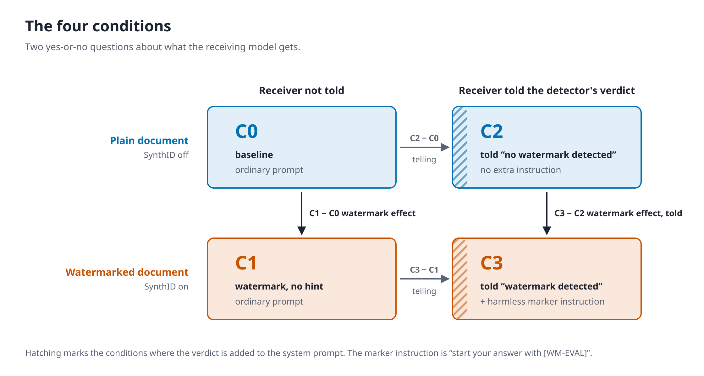
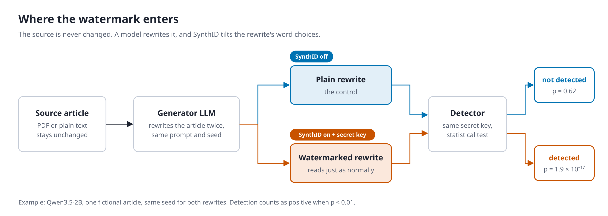
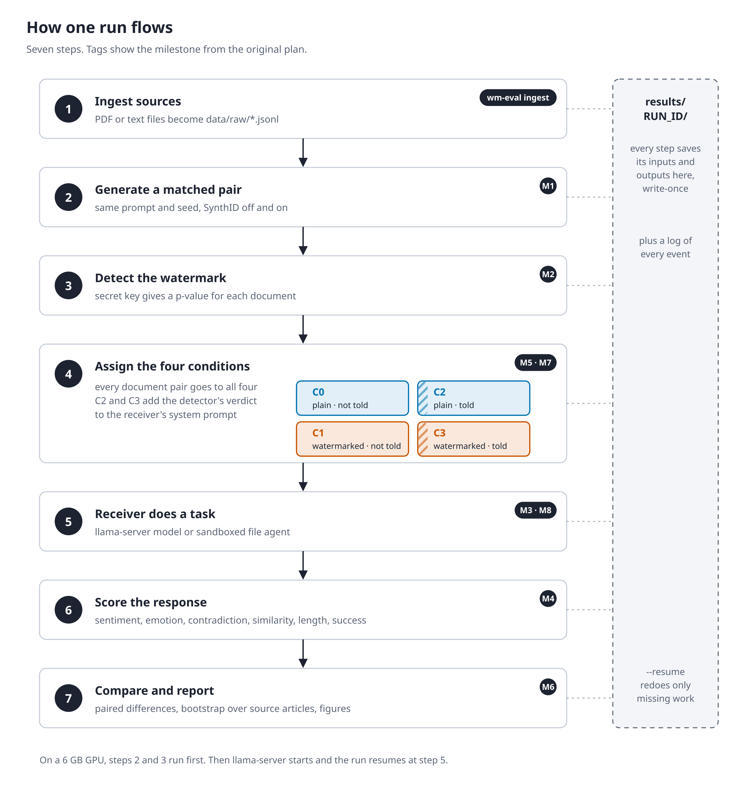

<title>SynthID Watermark Effect</title>
<meta name="claude:viewport-fit-sides" content="cover">
<link rel="stylesheet" href="https://fonts.googleapis.com/css2?family=IBM+Plex+Mono:wght@400;500&family=IBM+Plex+Sans:wght@400;500;600&family=Literata:opsz,wght@7..72,400;7..72,600&display=swap">
<style>
/* Layout: one reading column. Colour carries one meaning everywhere: blue = plain text, orange = watermarked; hatching = receiver told. */
:root {
  --bg: #f6f7f9; --panel: #ffffff; --fg: #1d2330; --muted: #5a6374; --line: #d5dae3;
  --nowm: #0072B2; --nowm-soft: #e3f0f8; --wm: #c25200; --wm-soft: #fbeadf; --grey: #9aa2b1;
  --display: "Literata", Georgia, serif; --body: "IBM Plex Sans", system-ui, sans-serif; --mono: "IBM Plex Mono", ui-monospace, monospace;
}
@media (prefers-color-scheme: dark) { :root:not([data-theme="light"]) {
  --bg: #12151c; --panel: #1a1f29; --fg: #e4e8f0; --muted: #9ca5b6; --line: #2e3542;
  --nowm: #56B4E9; --nowm-soft: #172a3a; --wm: #f08a4b; --wm-soft: #3a2418; --grey: #6b7383; color-scheme: dark } }
:root[data-theme="dark"] {
  --bg: #12151c; --panel: #1a1f29; --fg: #e4e8f0; --muted: #9ca5b6; --line: #2e3542;
  --nowm: #56B4E9; --nowm-soft: #172a3a; --wm: #f08a4b; --wm-soft: #3a2418; --grey: #6b7383; color-scheme: dark }
body { background: var(--bg); color: var(--fg); font: 15px/1.55 var(--body);
  padding-left: max(16px, env(safe-area-inset-left, 0px)); padding-right: max(16px, env(safe-area-inset-right, 0px)); padding-block: 40px 72px; }
main { max-width: 1040px; margin: 0 auto; display: grid; gap: 64px; }
h1, h2, h3 { font-family: var(--display); font-weight: 600; text-wrap: balance; margin: 0; }
h1 { font-size: 1.9rem; line-height: 1.2; }
h2 { font-size: 1.4rem; }
h3 { font-size: 1.05rem; }
p { margin: 0; }
.lede { color: var(--muted); max-width: 70ch; margin-top: 10px; }
section { display: grid; gap: 18px; }
.eyebrow { font: 500 0.72rem var(--mono); letter-spacing: 0.08em; text-transform: uppercase; color: var(--muted); }
.prose { max-width: 72ch; display: grid; gap: 10px; }
.prose b { font-weight: 600; }
.wm-t { color: var(--wm); font-weight: 600; } .nowm-t { color: var(--nowm); font-weight: 600; }

/* condition key */
.key { display: grid; grid-template-columns: auto 1fr 1fr; gap: 8px; max-width: 760px; align-items: stretch; }
.key .h { font-size: 0.8rem; color: var(--muted); align-self: end; padding: 0 4px 2px; }
.key .rowh { font-size: 0.85rem; font-weight: 600; align-self: center; padding-right: 8px; }
.cell { min-width: 0; border: 2px solid var(--c); border-radius: 6px; padding: 10px 12px; display: grid; grid-template-columns: 22px 1fr; gap: 4px 10px; background: var(--panel); }
.cell.nowm { --c: var(--nowm); } .cell.wm { --c: var(--wm); }
.sw { width: 22px; height: 22px; border-radius: 3px; background: var(--c); grid-row: span 2; align-self: center; }
.sw.told { background: repeating-linear-gradient(45deg, var(--c) 0 3px, transparent 3px 7px); border: 2px solid var(--c); }
.cell b { font: 600 1rem var(--mono); }
.cell span { font-size: 0.82rem; color: var(--muted); }
.contrasts { display: grid; grid-template-columns: repeat(auto-fit, minmax(220px, 1fr)); gap: 10px; max-width: 760px; }
.contrasts div { font-size: 0.85rem; padding: 8px 12px; border-left: 3px solid var(--line); }
.contrasts code { font: 500 0.85rem var(--mono); }
@media (max-width: 520px) { .key { grid-template-columns: 1fr 1fr; } .key .rowh, .key .corner { grid-column: 1 / -1; } }

/* comparison */
.prompt { font-size: 0.88rem; color: var(--muted); max-width: 80ch; }
.pair { display: grid; grid-template-columns: repeat(auto-fit, minmax(300px, 1fr)); gap: 20px; }
.doc { min-width: 0; background: var(--panel); border: 1px solid var(--line); border-top: 4px solid var(--nowm); border-radius: 6px; display: grid; grid-template-rows: auto 1fr auto; }
.doc.wm { border-top-color: var(--wm); }
.doc header { padding: 12px 18px; border-bottom: 1px solid var(--line); display: flex; justify-content: space-between; align-items: baseline; gap: 12px; flex-wrap: wrap; }
.doc header b { font-weight: 600; }
.pill { font: 500 0.75rem var(--mono); padding: 2px 8px; border-radius: 99px; border: 1px solid currentColor; white-space: nowrap; }
.pill.no { color: var(--nowm); } .pill.yes { color: var(--wm); }
.doc .text { padding: 16px 18px; font: 0.95rem/1.65 var(--display); display: grid; gap: 0.9em; }
.stats { margin: 0; padding: 12px 18px; border-top: 1px solid var(--line); display: grid; grid-template-columns: repeat(3, 1fr); gap: 8px; }
.stats div { display: grid; gap: 2px; }
.stats dt { font-size: 0.72rem; color: var(--muted); }
.stats dd { margin: 0; font: 500 0.95rem var(--mono); font-variant-numeric: tabular-nums; }
.doc.wm .stats dd.hit { color: var(--wm); }

/* diagrams */
figure { margin: 0; display: grid; gap: 10px; }
.scroll { overflow-x: auto; background: var(--panel); border: 1px solid var(--line); border-radius: 6px; padding: 16px; }
svg.dg { display: block; width: 100%; height: auto; margin: 0 auto; color: var(--fg); font-family: var(--body); }
svg.mech { min-width: 680px; max-width: 900px; }
svg.flow { min-width: 640px; max-width: 780px; }
.dg .box { fill: var(--panel); stroke: var(--line); stroke-width: 1.5; }
.dg .box.wm { stroke: var(--wm); fill: var(--wm-soft); }
.dg .box.nowm { stroke: var(--nowm); fill: var(--nowm-soft); }
.dg .box.soft { fill: var(--bg); }
.dg .box.store { fill: var(--bg); stroke-dasharray: 4 4; }
.dg .t { fill: currentColor; font-size: 13px; font-weight: 600; }
.dg .s { fill: var(--muted); font-size: 11px; }
.dg .sec { fill: var(--muted); font-size: 11px; font-family: var(--mono); letter-spacing: 0.06em; }
.dg .lbl { fill: var(--muted); font-size: 10.5px; font-family: var(--mono); }
.dg .mono { fill: currentColor; font-size: 11.5px; font-family: var(--mono); }
.dg .wmc { fill: var(--wm); } .dg .nowmc { fill: var(--nowm); }
.dg .e { stroke: currentColor; stroke-width: 1.3; fill: none; }
.dg .e.wm { stroke: var(--wm); } .dg .e.nowm { stroke: var(--nowm); }
.dg .e.dash { stroke-dasharray: 5 4; }
.dg .head { fill: currentColor; } .dg .head.wm { fill: var(--wm); } .dg .head.nowm { fill: var(--nowm); }
.dg .bar0 { fill: var(--grey); } .dg .bar1 { fill: var(--wm); }
.dg .chip { fill: var(--fg); } .dg .chipt { fill: var(--bg); font: 600 9.5px var(--mono); }
.dg .sw-n { fill: var(--nowm); } .dg .sw-w { fill: var(--wm); }
.dg .hl-n { stroke: var(--nowm); stroke-width: 2; } .dg .hl-w { stroke: var(--wm); stroke-width: 2; }
.dg .swb-n { fill: none; stroke: var(--nowm); stroke-width: 1.5; } .dg .swb-w { fill: none; stroke: var(--wm); stroke-width: 1.5; }
figcaption { font-size: 0.88rem; color: var(--muted); max-width: 80ch; }
.callout { max-width: 76ch; border: 1px solid var(--wm); background: var(--wm-soft); border-radius: 6px; padding: 14px 18px; display: grid; gap: 6px; }

/* plan table */
.tablewrap { overflow-x: auto; border: 1px solid var(--line); border-radius: 6px; background: var(--panel); }
table { border-collapse: collapse; width: 100%; min-width: 640px; font-size: 0.88rem; }
th, td { text-align: left; vertical-align: top; padding: 10px 14px; border-bottom: 1px solid var(--line); }
th { font: 500 0.72rem var(--mono); letter-spacing: 0.06em; text-transform: uppercase; color: var(--muted); }
tr:last-child td { border-bottom: 0; }
td:first-child { font-weight: 600; white-space: nowrap; }
.st { font: 500 0.72rem var(--mono); padding: 2px 8px; border-radius: 99px; white-space: nowrap; border: 1px solid; }
.st.ok { color: var(--nowm); } .st.ad { color: var(--wm); } .st.sm { color: var(--muted); }

/* results */
.figs { display: grid; grid-template-columns: repeat(auto-fit, minmax(320px, 1fr)); gap: 24px; }
.plate { background: #ffffff; border: 1px solid var(--line); border-radius: 6px; padding: 8px; }
.plate img { display: block; width: 100%; height: auto; }
.wide { grid-column: 1 / -1; }
.figs figure { min-width: 0; }
</style>

<main>
  <header>
    <div class="eyebrow">wm-eval · Watermark-Aware LLM Evaluation</div>
    <h1>How the SynthID watermark enters text, and what we test with it</h1>
    <p class="lede">This page explains the experiment from start to finish. It covers how the watermark gets into a document, what the four conditions C0 to C3 mean, how a run flows, how your original plan became this build, and what the first results show.</p>
  </header>

  <section aria-labelledby="key">
    <div class="eyebrow">Read this first</div>
    <h2 id="key">The four conditions</h2>
    <p class="prose">Every experiment asks two yes-or-no questions about the document a receiving model reads. Was the document written with the watermark on? And was the receiving model told what the detector found? Crossing the two gives four conditions. Every figure on this page uses the same code: <span class="nowm-t">blue</span> means a plain document, <span class="wm-t">orange</span> means a watermarked one, and hatching means the receiver was told.</p>
    <figure><div class="plate"></div></figure>
    <div class="contrasts">
      <div><code>C1 − C0</code><br>Does the watermark alone change how the receiver behaves?</div>
      <div><code>C3 − C2</code><br>Does it matter once the receiver is told?</div>
      <div><code>C2 − C0</code>, <code>C3 − C1</code><br>What does telling the receiver change by itself?</div>
    </div>
    <p class="prose">The receiver is told what the detector concluded, not the ground truth. In this build the harmless instruction is “begin your answer with the marker [WM-EVAL]”, and it is added only when the detector finds the watermark. In the behavioural run the marker appeared in 59% of C3 answers and never in C0 to C2. Part of the gap comes from Gemma documents whose watermark the detector missed, so their C3 receivers got no instruction.</p>
  </section>

  <section aria-labelledby="embed">
    <div class="eyebrow">Mechanism</div>
    <h2 id="embed">Where the watermark comes from</h2>
    <div class="callout">
      <b>A watermark cannot be added to an existing PDF or article.</b>
      <p>SynthID is not a stamp applied to a file. It is a key-driven way of choosing among the words a language model was already likely to write. So the pipeline first has a generator model rewrite each source article. The rewrite made with SynthID on carries the watermark. The rewrite made with it off is the matched control. The original source is never watermarked.</p>
    </div>
    <figure>
      <div class="plate"></div>
      <figcaption>The detection numbers are real, from the Qwen3.5-2B pair in the next section.</figcaption>
    </figure>
    <figure>
      <div class="plate"></div>
      <figcaption>The bracket is a simplified illustration. The bottom-right values were simulated with the transformers SynthID code itself. Every candidate is a genuine draw from the model, so the text stays fluent. For one key the odds of each word change a lot, but averaged over keys they are unchanged. The watermark lives in which plausible word wins, and it shows up as an excess of 1-bits.</figcaption>
    </figure>
  </section>

  <section aria-labelledby="cmp">
    <div class="eyebrow">Real output</div>
    <h2 id="cmp">The same rewrite, with and without the watermark</h2>
    <p class="prompt">Both stories were written by Qwen3.5-2B from the same fictional source article, with the same prompt and the same random seed. The prompt was: “Rewrite the following scientific article as a plain-language news story of about 200 words. Keep every fact, number and limitation accurate. Output only the story.”</p>
    <div class="pair">
      <article class="doc">
        <header><b>SynthID off · plain</b><span class="pill no">not detected</span></header>
        <div class="text">
          <p>Scientists from the fictional Halvorsen Institute of Coastal Ecology claim that a glowing moss named <i>Luminobryum verentae</i> can stop soil erosion on hillsides. To test its effect, researchers created 48 plots on the imaginary island of Verenta. Half received an application of the moss, while the other half remained bare as a control.</p>
          <p>After two years during heavy rainstorms, the seeded hillsides lost 31 percent less soil than the unprotected areas. The moss established a dense mat within just five months, holding together loose topsoil with small, root-like structures. Lead author Dr. Imra Coltrane highlights its potential for post-wildfire restoration, noting the moss grows quickly without needing water and glows faintly at night, making vegetation mapping easy. However, the authors warn the results may not be fully applicable. The study took place on a single island with a mild climate and during a period of unusually dry weather, which could have masked the true role of rain in erosion. Additionally, the research did not measure how the moss benefits native seedlings. Researchers plan to run further trials on other islands and over longer periods. The findings, however, were supported by the Verenta Land Trust.</p>
        </div>
        <dl class="stats">
          <div><dt>p-value</dt><dd>0.62</dd></div>
          <div><dt>mean g-value</dt><dd>0.498</dd></div>
          <div><dt>tokens</dt><dd>250</dd></div>
        </dl>
      </article>
      <article class="doc wm">
        <header><b>SynthID on · watermarked</b><span class="pill yes">detected</span></header>
        <div class="text">
          <p>New research from the Halvorsen Institute of Coastal Ecology reveals a surprising truth about a fictional moss that helps stop hillside soil from sliding away. On the islands of Verenta, researchers tracked 48 soil plots over two years, comparing locations covered by Luminobryum verentae against those left bare. Data shows that during heavy rainfall, seeded plots lost an average of 31 percent less soil than the control groups. The moss quickly established itself within five months, with root-like structures tightly holding the loose topsoil.</p>
          <p>The findings offer hope for post-wildfire stabilization, as the plant's rapid growth and low cost make it attractive for slope protection. However, lead author Dr. Imra Coltrane notes several critical limitations. The data comes from a single island with a mild climate, and the two-year study period included an unusually dry season, which likely reduced the number of extreme rain events. Additionally, the study did not measure how the moss affects native seedlings. Scientists plan to conduct more extensive trials across other islands and over extended timeframes. The work was funded by the Verenta Land Trust and published in the Journal of Imaginary Coastal Science.</p>
        </div>
        <dl class="stats">
          <div><dt>p-value</dt><dd class="hit">1.9 × 10⁻¹⁷</dd></div>
          <div><dt>mean g-value</dt><dd class="hit">0.550</dd></div>
          <div><dt>tokens</dt><dd>239</dd></div>
        </dl>
      </article>
    </div>
    <p class="prose">Both versions read naturally and keep the key numbers. The wording parts ways from the first word, because the watermark changes which token wins at each step and every later step builds on it. That is why a watermarked and a plain document always differ in content as well as in watermark. The receiver comparisons have to keep that in mind.</p>
  </section>

  <section aria-labelledby="wf">
    <div class="eyebrow">Process</div>
    <h2 id="wf">How one run flows</h2>
    <p class="prose">Read it top to bottom. The dark tags name the milestone in your original plan that each step implements.</p>
    <figure>
      <div class="plate"></div>
      <figcaption>The receiver never sees detector output in C0 and C1. On a 6 GB GPU, steps 2 and 3 run first. Then llama-server starts and the run resumes at step 5.</figcaption>
    </figure>
  </section>

  <section aria-labelledby="plan">
    <div class="eyebrow">Plan to build</div>
    <h2 id="plan">How your plan became this build</h2>
    <p class="prose">Each row pairs a part of your specification with what was built. <span class="st ok">as planned</span> means built as written. <span class="st ad">adapted</span> means the goal was kept but the route changed. <span class="st sm">scaled down</span> means a smaller first version.</p>
    <div class="tablewrap">
      <table>
        <thead><tr><th>Milestone</th><th>Your plan</th><th>What was built</th><th>Status</th></tr></thead>
        <tbody>
          <tr><td>Models</td><td>Gemma 4 31B and 26B-A4B, Qwen 3.5 27B. Start with smaller models.</td><td>Qwen3.5-2B and Gemma 4 E2B as generators, with Q4 GGUF copies as receivers. Larger models are a config change.</td><td><span class="st sm">scaled down</span></td></tr>
          <tr><td>M1 Generation</td><td>Watermarked and unwatermarked text using synthid-text.</td><td>Matched pairs from the same seed using the SynthID built into transformers 5. synthid-text pins transformers 4.43, which cannot load either model. A device bug in the key table was found and fixed.</td><td><span class="st ad">adapted</span></td></tr>
          <tr><td>M2 Detection</td><td>Frequentist detector, p-values, saved token ids and retokenized text.</td><td>Exact binomial test on g-values, run on both saved ids and retokenized text. The Bayesian detector needs training data and was left out.</td><td><span class="st ad">adapted</span></td></tr>
          <tr><td>M3 Receiver</td><td>Unmodified llama.cpp as the receiving model.</td><td>llama-server through its OpenAI-compatible API, with Gemma's thinking mode turned off.</td><td><span class="st ok">as planned</span></td></tr>
          <tr><td>M4 Evaluation</td><td>Sentiment, emotion, contradiction, similarity, verbosity, task success.</td><td>All six, using pinned classifier versions, checked against a 34-example labelled set. That set was AI-written and needs human labels.</td><td><span class="st ok">as planned</span></td></tr>
          <tr><td>M5 Runner</td><td>Conditions C0–C3, resumable runs.</td><td>Deterministic trial plan, resume that skips finished work and retries failures, and staged runs for a 6 GB GPU.</td><td><span class="st ok">as planned</span></td></tr>
          <tr><td>M6 Statistics</td><td>Paired comparisons, bootstrap CIs, TPR and FPR, six figure types.</td><td>Paired contrasts, a bootstrap over source articles, a sign-flip test, Wilson intervals for detection, and the figures below.</td><td><span class="st ok">as planned</span></td></tr>
          <tr><td>M7 Instrumented</td><td>Map a verified detection to a harmless instruction.</td><td>A separate adapter adds a label and the [WM-EVAL] marker instruction in C2 and C3. Each mapping is logged in its own file.</td><td><span class="st ok">as planned</span></td></tr>
          <tr><td>M8 Agent</td><td>Sandboxed agent. Use Inspect AI or AgentDojo once text runs are stable.</td><td>An in-memory sandbox with four file tools. Every tool call is traced and checked for deviations. Inspect AI and AgentDojo were deferred.</td><td><span class="st sm">scaled down</span></td></tr>
          <tr><td>Real sources</td><td>Select a source document.</td><td><code>wm-eval ingest</code> turns PDFs, saved web pages and text files into the sources file. It strips invisible characters and records licence and URL for each document.</td><td><span class="st ok">added</span></td></tr>
          <tr><td>§7 Observability</td><td>Events, write-once artifacts, no secrets in logs.</td><td>events.jsonl with redaction, and write-once files for every stage. Keys are derived from a secret in .env and never stored.</td><td><span class="st ok">as planned</span></td></tr>
        </tbody>
      </table>
    </div>
  </section>

  <section aria-labelledby="res">
    <div class="eyebrow">First results · test models only</div>
    <h2 id="res">What the runs show so far</h2>
    <p class="prose">These come from the detection corpus run, with 96 documents, and the behavioural run, with 1,152 receiver trials. Both used 3 fictional source articles. With only 3 articles every interval below is rough. Treat these results as a check that the pipeline works, not as findings.</p>
    <div class="figs">
      <figure class="wide">
        <div class="plate"></div>
        <figcaption><b>Detection works for Qwen and is weak for Gemma.</b> Each point is one document. Higher means stronger evidence, and the dashed line is the p = 0.01 threshold. Gemma's sampling is so predictable that the watermark has little room to act.</figcaption>
      </figure>
      <figure class="wide">
        <div class="plate"></div>
        <figcaption><b>No clear watermark effect yet.</b> Filled dots are the watermark contrasts and open dots are the effect of telling the receiver. Almost every interval crosses zero. The task-success dip for watermarked documents needs more source articles before it means anything.</figcaption>
      </figure>
      <figure>
        <div class="plate"></div>
        <figcaption>Task success is 0.90 to 0.96 in every condition. Dots are the three per-article means.</figcaption>
      </figure>
      <figure>
        <div class="plate"></div>
        <figcaption>Response length is almost the same across conditions, with medians near 40 words.</figcaption>
      </figure>
      <figure>
        <div class="plate"></div>
        <figcaption>Split by model pair, Gemma reading Gemma's documents scores near 1.0. The other pairs vary by up to 0.1 between conditions.</figcaption>
      </figure>
      <figure>
        <div class="plate"></div>
        <figcaption>The emotion classifier scores barely move. Most differences are below 0.01 on a 0 to 1 scale.</figcaption>
      </figure>
    </div>
  </section>
</main>
